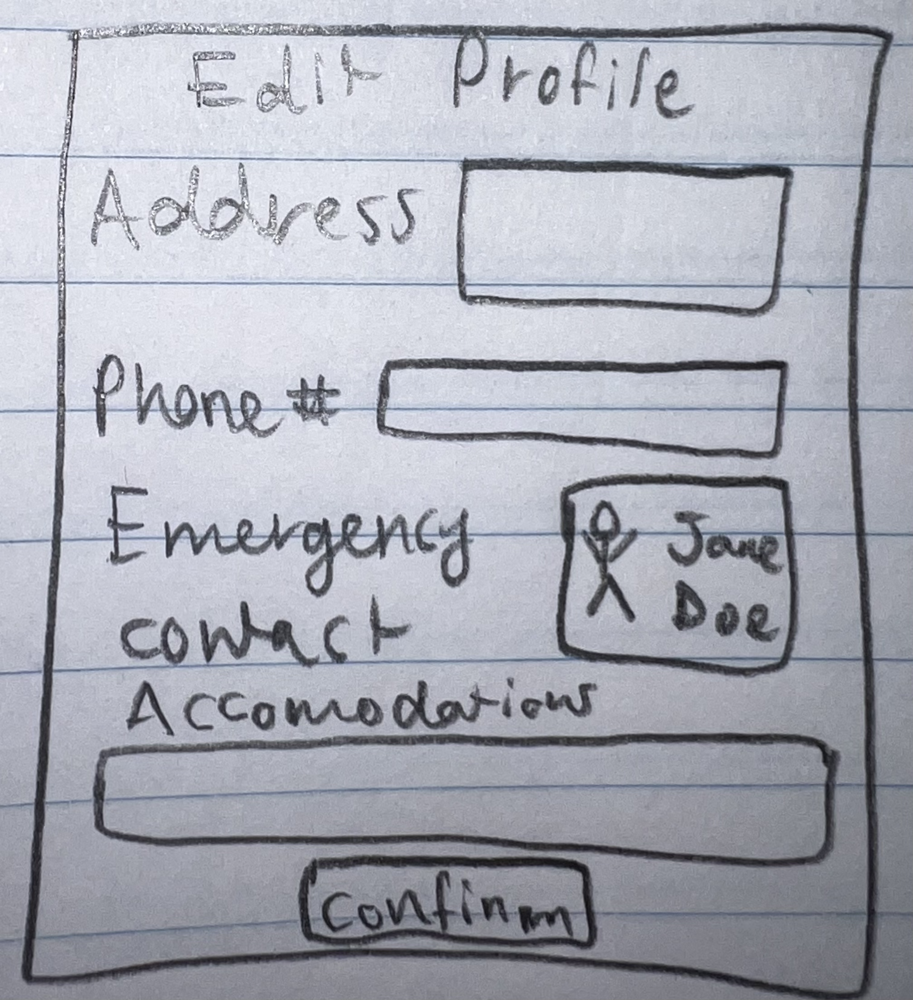

Design Process
Project Ideation
Schedule a Ride:

Apply for Public Rideshare Service:

Edit Profile Imformation:
Design Research Plan
The people who might use our design are elderly people with and without disabilities in areas where senior transportation programs exist. These seniors have varying levels of technological knowledge – some may use technology every day while others may struggle to use it. Some may be visually or mentally impaired. These seniors range from age 65 and up and of various races and cultural backgrounds. The senior population may have a variety of mobility abilities, ranging from great mobility to permanent wheelchair users.
We will use public databases and relevant scientific articles to research the people who might use our design. We chose these methods to get a greater grasp on the overall views of our target population in a simple way. We also chose these specific articles and databases because their information and data was vast while also relating directly to our problem statement.
Specifically, we chose one database and one scientific article. The database was created during a national poll from the National Aging and Disability Transportation Center and tells of the general transportation trends for senior citizens in the US. The scientific article focuses solely on rideshare services for senior citizens and gives detailed statistics of current users including ability levels, cultural backgrounds, and type of rideshare they use.
Design Research Review
To understand our user we used three different types of sources from PR Newswire and the National Library of Public Medicine (NLPM), including public databases, national polls, and user testimonials. Here are some of the most critical findings we learned:
Care recipients heavily rely on their personal network of family and friends to provide transportation. From this network, “39 percent of caregivers spend five to 10 hours or more on the transportation needs of friends or relatives each week” (PR Newswire). This responsibility can be overwhelming to caregivers, and uncomfortable for care recipients.
Being unable to drive themselves, 68 percent of care recipients feel that it is difficult to find alternative transportation that does not include having a caregiver transport them (PR Newswire).
63% older adults (65+ years old) who stop driving reported they often experience a sense of dependence on others, as well as “frustrated (39 percent [...], isolated (33 percent [...], and trapped (30 percent [...]” (PR Newswire).
Only 15% of older adults use public transit (PR Newsire). This figure does not differentiate between public transit specifically for seniors and general public transit services.
In regards to for-profit rideshare services, “drivers are not required to participate in trainings or offer special assistance to older adults who need to be escorted into their homes or helped with walkers or packages” (NLPM).
It’s important for older drivers to have services to transition to once they decide to give up driving because older “drivers, particularly those aged 75 + years, have higher crash fatality rates than middle-aged drivers (aged 35–54 years)” (NLPM).
Who is going to use the design?
The design is going to be used by American senior citizens with and without disabilities who no longer drive and require reliable transportation.
What tasks do they now perform?
To transport themselves, they currently either risk driving a personally owned vehicle or rely on their personal networks to provide transportation with a private vehicle, with a small minority using public transportation.
What tasks are desired?
They seek a cost-effective alternative where scheduling rides, receiving updates, and ensuring safe, timely transportation.
Where are the tasks performed?
The task is performed by making a call or using the app, with rides taking place in urban, suburban, and rural areas.
What is the relationship between the person and data?
The person needs access to data like ride schedules, driver details, and assistance options.
How do users communicate with each other in your app/system/solution?
Users communicate via phone calls, text message updates, automated reminders, and live customer support.
How often are the tasks performed?
We can assume the task needs to be performed weekly at a minimum to get groceries, medications, or attend appointments, but we can expect the task to be performed multiple times a week, as needed.
What are the time constraints on the tasks?
To plan routes for drivers, rides requests most likely will have to be made 24 hours in advance minimum, but it is recommended to schedule as early as possible to make sure that the service has not reached capacity.
For the riders, senior citizens will have to wait before the ride and after the ride for their initial pickup and return.
For the drivers, they may have to wait while grocery shopping, appointments, pharmacy pick-ups are being performed.
What happens when things go wrong?
Users can expect immediate support through a helpline, clear explanations for delays, and easily accessible troubleshooting options.